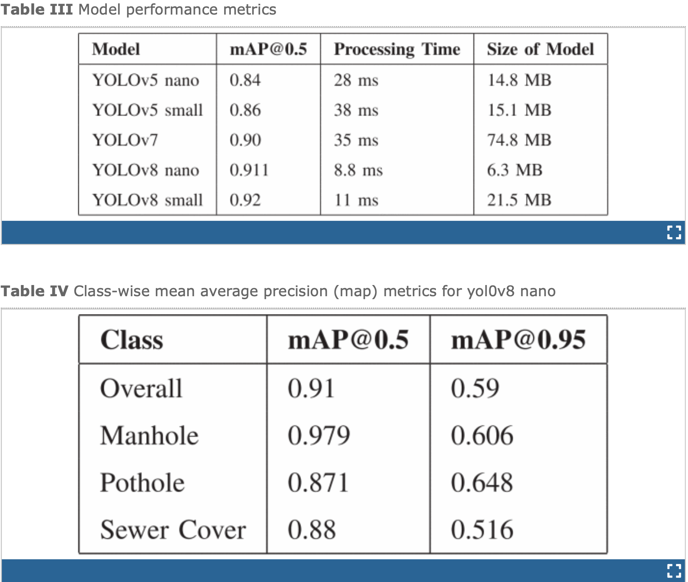

Conclusion
The integration of advanced object detection models like YOLOv8 has revolutionized the approach to road hazard detection. By leveraging state-of-the-art architecture, optimized training techniques, and a robust dataset, YOLOv8 demonstrates exceptional performance in identifying potholes, sewer covers, and manholes with high accuracy and speed. Its ability to process real-time data efficiently, while maintaining a compact model size, makes it an invaluable tool for improving road safety and infrastructure management.
Through this tutorial, we’ve explored how YOLOv8 outperforms previous iterations, offering a balanced solution that excels in both detection precision and resource efficiency. Whether implemented in autonomous vehicles or infrastructure maintenance systems, YOLOv8's contribution to road safety is undeniable. The nano variant, in particular, stands out with its impressive mean average precision and rapid inference times, making it highly suitable for real-world applications.
As we look to the future, further optimizations and real-world deployments of YOLOv8 hold the potential to enhance road safety on a larger scale, providing more reliable and proactive maintenance solutions. By embracing the power of modern AI-driven detection models, we move closer to creating smarter, safer roads for everyone.
